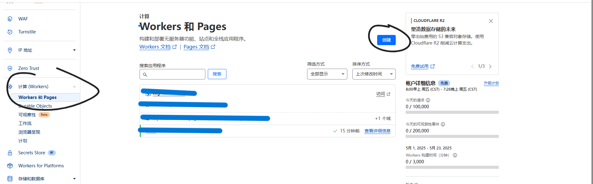
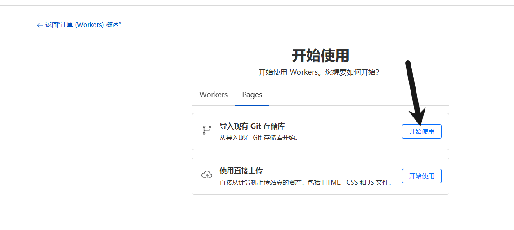
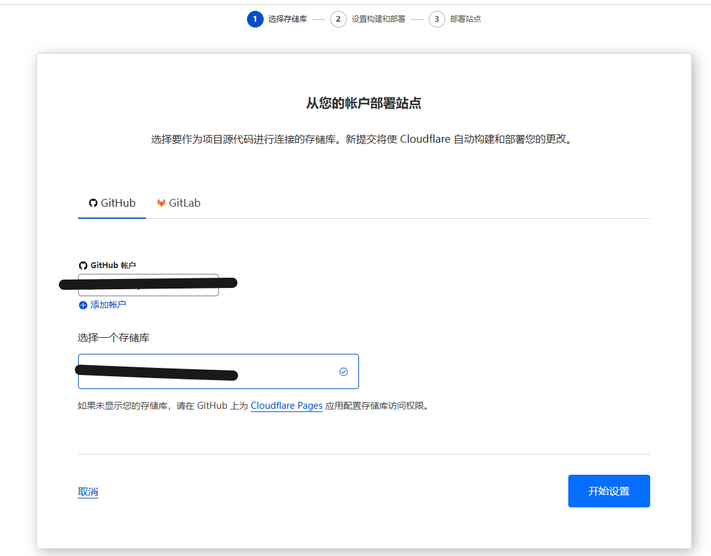
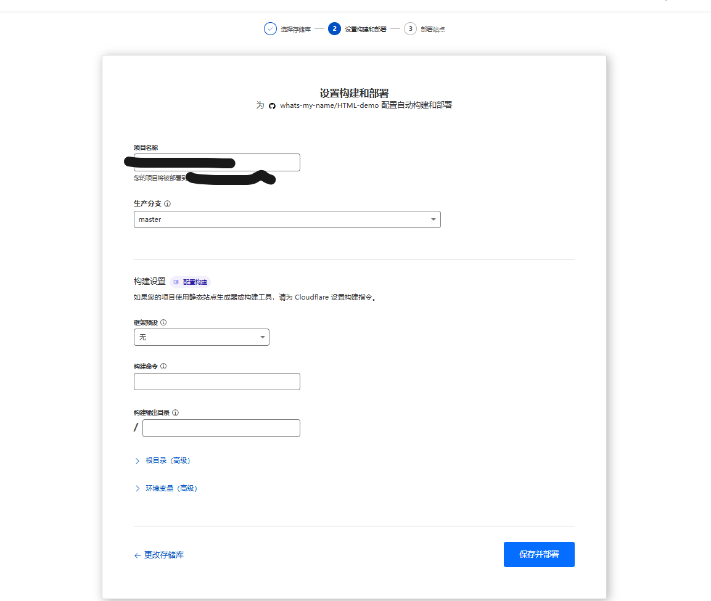
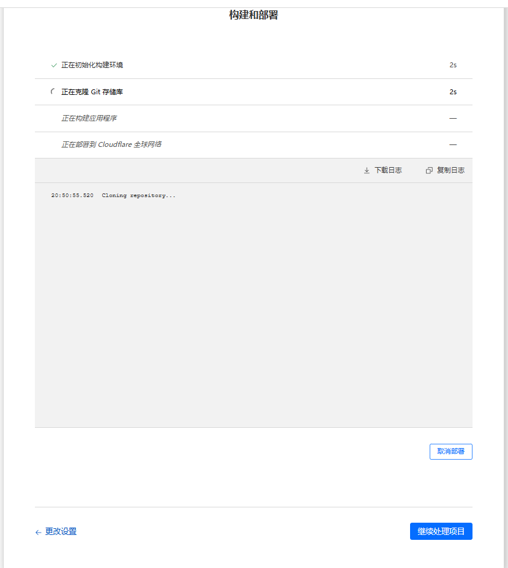
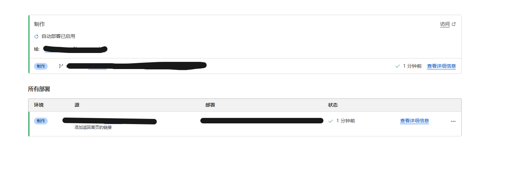

视频链接(转载B站-技术爬爬虾)视频
1.注册前面提到的账号,cf,GitHub,这两个就够了
打开cf
点击work,然后选择work and pages,然后点创建

然后选择pages,选"导入现有git库"那个,选下面的如果没有域名做出来的页面别人访问不到

按照提示绑定GitHub就行,然后点"开始设置"

这步啥也不用动(主要是我也不知道都是什么...),然后点"保存并部署"

等它成功之后,点继续处理项目,就可以了

这样就是成功了,你就可以把cf免费分配给你的域名发给别人了
